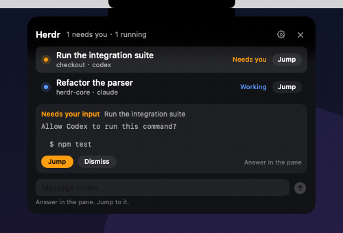
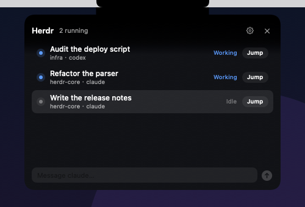

固定 420 × 300
8 个 agent 已经是 4 行满屏。真实列表有 20 个。滚动条是唯一的多任务策略，选中和跳转都要先找到那一行。
注意力层重设计
现在的 Herdr Island 是一个 420 × 300 的 agent 列表。它知道谁在忙，却不擅长回答“现在要我做什么”。这次重做把它的工作改成三层：余光里的信号、需要你决定的队列、一步回到终端。
收起不画下巴。展开只推一个决定。完成不打断。
收起态把待处理与运行数贴在摄像头刘海左右两翼，不占右上角。展开时面板从屏幕顶部长下来，把菜单栏、刘海和相机一起纳入同一块黑色。完成事件用一次 4 秒 peek，不展开。
Audit / 现状
我用当前源码、--render 输出和本机 herdr agent list 的真实数据核对了一遍。问题不在视觉，在结构：它把 agent 当库存，而不是当注意力。
本机当前 20 个 agent，分布在十几个 workspace。固定 420 × 300 的面板一屏只装得下 4 行。


8 个 agent 已经是 4 行满屏。真实列表有 20 个。滚动条是唯一的多任务策略，选中和跳转都要先找到那一行。
blocked 是唯一必须人肉决策的状态，却只给 8 行终端。真正的问题经常被截断，用户还是只能 Jump 回终端看。
完成不是紧急事件，却和 blocked 用同一种打断方式，默认停留 8 秒。多个 agent 连续完成时，面板会反复抢回注意力。
收起态不回答“有几个、哪个项目、刚才发生了什么”。颜色是唯一的信息，用户必须打开面板才能确认。
拒绝文案只是“等这轮结束”。人可以先把话写好，等 agent 空闲再发；现在的实现把这段等待留给了用户。
内容瞬间替换，状态变化没有方向。用户看不出是“新来的”还是“同一个变了状态”，也没有“从哪来、回哪去”。
y 或 Enter。Jump 仍然先聚焦 Herdr pane，再聚焦承载它的 Ghostty。这些判断是对的，重做不碰。Thesis / 四个决定
四条原则决定了这次重做的取舍。每条原则都对应一个看得见的改动，不只是口号。
收起态只回答一个问题：有没有事需要我。数量、颜色、一个项目名就够了。用户不需要先打开面板才知道发生了什么。
展开时按“需要你 → 刚完成 → 运行中 → 空闲”排。done 未读排第二。用户不需要在 20 个 agent 里自己找重点。
Enter 回终端。R 回复。S 稍后。/ 原位搜索。所有动作都在同一个面板里，没有二级菜单，没有“先选中再操作”。
blocked 展开，done 只 peek。自动展开不抢键盘焦点。安静时段只更新两翼。用户不主动看时，面板不出现。
这也解释了为什么砍掉内嵌终端、token 成本分析和自动批准。它们都不会减少一次上下文切换。
Surfaces / 五种形状
下面是可以直接操作的提案原型。点刘海两翼打开 deck，点任意一行进入详情，按 / 在原位搜索，不另开浮层。拖一下刘海下的水滴：拖出 96px 就断开，断开后是独立的，不再连着刘海；它停在哪，新任务的输入框就在哪展开。面板从屏幕顶端长下来，把菜单栏和刘海包进同一块黑色；每一行用 agent 自己的标记，不再用首字母。所有 agent 数据都是虚构的，尺寸和动效是真的。
点击原型任意位置后，方向键、Enter、R、S、Esc 生效。原型不会阻塞页面滚动，只有聚焦在原型里时才接管键盘。
水滴：拖出 96px 就断开。断开后没有线连着刘海，回程也不拖线。中途松手会缩回；停在哪，输入框就从哪长出来。空输入不发送，也不批准任何 blocked 的等待。
| Surface | 触发 | 尺寸 | 内容 | 退出 |
|---|---|---|---|---|
| Ambient | 常驻 | 刘海两翼 32pt | 左：待处理 · 右：运行 / 完成 | 点击、拖出水滴或 ⌃⌥H |
| Drop | 从刘海拖出 | 28pt 液体 | 新任务种子；断开后独立，停在哪输入框从哪长出来 | 松开、Esc、点外部 |
| Peek | done、排队消息送达 | 400 × 248 | 最近一条完成 + 其他计数 | 4s、hover 暂停、点击进 deck |
| Deck | 两翼、热键、blocked | 560 × 440–640 | 过滤 + 注意力卡 + 运行列表 + composer | Esc、点击外部、done 后 6s |
| Detail | 点卡片、点击行 | 660 × 640 | 决策卡、终端原文、动作 | Esc 返回 deck |
| Search | /（面板聚焦时） | deck 内联 | 过滤 agent 和动作，原位替换列表 | Esc 清除 |
这一轮调整的直接原因是实际使用。11.5px 的行标题、7–9px 的标签和 2–5px 的行距在 Retina 上仍然偏小，中文尤其明显。现在正文 12.5px，行标题 13px，详情标题 15px，终端 11.5px；间距按 4px 网格重排。新任务和窗口任务沿用同一套字号与 20px 边距。
自动展开时不 makeKey。只有用户点进面板、按热键或开始回复时才获得键盘焦点。这是对当前实现的一个明确修正。
No-notch / 无刘海
没有摄像头开孔的时候，不伪造一个。菜单栏本来就是常驻、始终可见、贴着屏幕顶端的。状态角标和面板挂在菜单栏图标上，水滴只在按住拖动时从图标里长出来。手势和刘海屏一致，只把锚点从刘海换成图标。
外接屏同一套逻辑。内建刘海屏不改。下面的原型可以直接点、悬停、右键和拖。
菜单栏应用最容易犯的错，是先弹一层菜单再让用户找「显示岛」。这里左键直接开 deck，右键才出菜单；悬停只给 peek；按住图标拖动，水滴才从图标里长出来，不抢焦点。
图标保持单色镂空，出现数字角标，auto-peek 一次 4 秒。之后只留角标，不常驻黑条，也不再次自动展开。安静时菜单栏只多一个小图标。
岛跟随当前活动屏幕。内建刘海屏用两翼，外接屏用菜单栏形态；合盖或拔线时回到主屏，不留下孤立窗口，也不把面板留在已经拔掉的屏幕上。
设置里可以打开「模拟岛」，在无刘海屏顶部居中画一块虚拟岛，面板回到 crown 形态。代价是盖住菜单栏中段，也像在假装硬件开孔。默认关闭。
Motion / 动效规范
什么变了，从哪来，下一步去哪。其他的都不动。动效是状态变化的注释，不是表演。
| 元素 | 触发 | 时长 | 曲线 | 备注 |
|---|---|---|---|---|
| 面板展开 | 两翼、热键、blocked | 380ms | cubic-bezier(.2,1.12,.32,1) | width / height / transform 同时 |
| 面板收起 | Esc、done 后、点击外部 | 180ms | ease-in | 内容先淡出，容器再收 |
| 内容进入 | surface 变化 | 140ms | ease-out | 延迟 60ms，逐行 24ms，最多 6 行 |
| Peek 停留 | done、消息送达 | 4s | linear progress | hover 暂停，进度线同时暂停 |
| 数字变化 | 计数更新 | 180ms | ease-out | 上下滚动，不改变布局宽度 |
| Blocked 呼吸 | 等待中 | 2.6s loop | ease-in-out | 只动 halo，不动卡片 |
| Done 勾选 | 完成 | 240ms | ease-out | 一次性 draw，不循环 |
| Toast | 动作结果 | 180 / 140ms | ease-out | 不阻挡点击，不移动布局 |
| Search | /（面板聚焦时） | 120ms | ease-out | 高度收拢 + 结果替换，不盖住内容 |
| 水滴悬挂 | 静止 | 1.15s loop | ease-in-out | 只变椭圆的 0.45px，不位移 |
| 水滴拖拽 | pointermove | 每帧 | spring 0.18 / 0.78 | 沿速度拉长；颈线由接触点拉出、中段变细、水滴变梨形；超过 96px 细线断开，颈线和水痕一起消失 |
| 水滴回弹 | 松手、发送后 | 约 520ms | ease-out cubic | 断开后独立回位，回来才重新接上；没有线跟着走 |
| 输入框生长 | 水滴停住 | 220ms | cubic-bezier(.2,1.12,.32,1) | 从水滴边缘展开，不居中弹出 |
面板从刘海下缘长出来，不从屏幕中心淡入。收起时回到同一个点。
用户先看到形状，再读到信息。两者同时动会显得拥挤。
所有过渡从当前帧重定向，不排队，不跳变。连按热键也不会堆积动画。
展开 380ms 是上限。detail 展开 260ms，行状态变化 140ms。
不脉冲，不滚动数字，不位移。原型右上角可以切换验证。
它挂在刘海上，有重量、有惯性，会被拉出一条液体颈线。接触点先湿开一小片，颈线中段随张力变细，水滴被拉成梨形；拖动速度决定它往哪边弯。超过 96px，细线断开，它独立于刘海，回程也不再拖一条线。输入框从它停下的地方长出来，所以“在哪说”和“说什么”是同一件事。
Scope / 功能范围
这不是一个“什么都能做”的面板。范围只按一个标准划：能不能减少一次上下文切换。不能的，先不做。
刘海两翼 + blocked 短暂项目名。不打开面板也知道有什么事。
blocked / done 未读 / running / idle。排序替用户做。
审批原文 + 终端上下文 + Open terminal。把最需要人的状态做完整。
working 时先写，空闲后自动发送。不打断当前 turn，也不让人等。
blocked 展开，done 只 peek；安静时段；按项目静音。
Reduce Motion、焦点环、最小 11pt、对比度。键盘和低视力用户也要能用。
UI 默认中文，可切英文。状态、筛选、动作走同一张字符串表；终端原文与 agent 名不翻译。
本机 + 已保存的 SSH 机器，先只读。Herdr 0.9 已有 --machine。
回来时看到 4 小时内完成了什么，只存本地，不发网络。
不只跳转，还能 snooze、mute、打开设置。
默认关闭，只给 blocked。一次轻提示，不循环。
二进制、socket、最后采样、Automation 权限。排障不用猜。
安全边界不是可配置项。
Jump 已经够快，终端留在 Ghostty。
不是这个面板要回答的问题。
会制造虚假的确定感。原文才是事实。
一个固定材质就够了，颜色只表达状态。
没有需求证据，先把 Mac 上的循环收紧。
如果只能做一条，做决策卡。它比列表更能减少上下文切换，也能把“不自动批准”的边界说清楚。
Platform / Herdr 原生能力
我按 Herdr 0.9.5 的 CLI 逐组看了一遍：agent、worktree、workspace、machine。能减少上下文切换的接进来，剩下的明确不做。原型里已经能操作前三条。
agent start --kind24 种 agent 类型常用 12 种带各自标记；其余回退到终端标记或首字母。选择器里就能换，不用改设置。
worktree create新任务开独立 worktree默认关，按需开。岛调 Herdr 建 worktree 和 workspace，不自己跑 git worktree add。
agent wait运行中先排队等到 idle 或 done 再 prompt。等来 blocked 就停手，交给终端，不替 agent 回答。
agent read --source recent-unwrapped更完整的最近输出详情保留软换行，读最近 80 行。现在用的是 visible，只能看到视口。
workspace close清理岛自己建的任务只对岛创建的 workspace 出现，二次确认。不碰用户自己开的终端。
machine list / status多机聚合P1 只读。远端重连仍由你在终端完成，岛不代跑 SSH。
integration status按已安装过滤 kind没装的 agent 不出现在选择器里，避免点了才报错。
session / tab / pane不做终端管理器布局、分屏、session 切换留在 Herdr 和 Ghostty。岛只回答“谁需要我”。
notification show不另发系统通知刘海就是通知。再来一条 macOS 横幅只会和岛抢同一件事。
agent explain不做状态总结用模型解释 agent 为什么卡住，会制造虚假的确定感。原文才是事实。
agent attach --takeover不接管终端Jump 已经能把焦点送回 Ghostty。接管会多一层归属问题。
Fusion / 能力融合
我把 herdr 0.9.5 和 herdr-core 0.1.14 的命令、事件和 socket schema 逐条看了一遍。真正能增强岛的，不是更多面板，而是三类能力：事实、归属、手。事实让岛不再猜，归属让任务有身份，手让动作在岛上完成。
0.9.5 的事件已经带 status、title、state_labels；core 的 Status 再带 kind、msg、progress，Terminal 带 turn。岛只显示 Herdr 说过的话。事件断了，就显式降级，不装成还连着。
worktree、machine、template、labels、doc。一个任务知道自己从哪来、在哪跑、属于谁。岛重启，或者换一台 Mac，同一张卡还能接回来。
排队、停止、接文件、跑只读检查。每个动作都对应一个 Herdr 原语，岛不发明自己的控制通道，也不假装能替人做决定。
Anatomy / 任务卡
谁需要我。为什么。做到哪了。我能做什么。四个问题都由 Herdr 的事实回答，岛只负责把它们排成一眼能读的顺序。
“允许我运行 pnpm test --filter auth 吗？”
pnpm test --filter auth62%横向滚动看全表 →
| 能力 / Capability | 岛上的表现 / Experience | 0.9.5 | Core 0.1.14 | 阶段 |
|---|---|---|---|---|
P0 · 现在就能接事实和出处 | ||||
events.subscribe事实流 | 事件直接带 status、title、state_labels，状态到岛不等下一次采样。 | 已有 | 更细 | P0 |
agent read --source recent-unwrapped阻塞原文 | 决策卡呈现 agent 的最后 20 行和原话，不替它总结。 | 部分 | kind / msg | P0 |
agent prompt · wait.until精确完成 | 排队消息只在 turn 真正结束后结算；等来 blocked 就停手。 | 已有 | send --wait | P0 |
worktree.create / remove隔离副本 | 新任务可开 worktree，卡片带分支；清理只碰岛创建的副本。 | 已有 | cwd 替代 | P0 |
P1 · 下一版让卡有进度和手 | ||||
pane.process_info + wait_for_output正在跑什么 | 卡片写 pnpm test；dev server 打出 ready 就显示端口，点开浏览器。 | 已有 | foreground / wait | P1 |
machine list / status在哪跑 | 创建前看到机器在线状态，离线不派活。 | 已有 | machine ls | P1 |
report_metadata + agent.view.set回写 Herdr | Herdr 的 agent 面板出现 “Island” 视图，两边是同一批任务。 | 已有 | labels | P1 |
Status.progress / turn进度与轮次 | 水滴外的进度弧，卡片写“第 4 轮”；没有进度就不画。 | 无 | 已有 | P1 |
send --if idle --wait排队与停止 | working 时按钮变“排队”，长按才出现“停止”，回执说清结果。 | 不做 | interrupt | P1 |
P2 · 有了再做把归属做深 | ||||
terminal.put + file.read接住文件 | 拖文件到水滴，落到 agent 旁边，输入框只插路径。 | 无 | 已有 | P2 |
templates.list + run角色模板 | 新任务先选 reviewer / implementer，再写任务。 | 无 | 已有 | P2 |
parent + children_of子任务树 | 卡片显示“2 个子任务”，blocked 的子任务上浮。 | 无 | 已有 | P2 |
label + doc.get/set任务记忆 | 固定、备注、颜色跨重启和机器保留，冲突可见。 | 无 | 已有 | P2 |
还看过但先不接 · terminal.attach --observe · plugin.action.invoke · keep / reason · layout.export · session。它们有用，但还不是“减少一次上下文切换”的最短路径。
发送键在 working 时变成“排队”。--if idle 只在空闲时落笔，--wait 等这一轮真正结束。blocked 时不发，交给决策卡。
hc send --wait --if idle t7 "..."
截图、日志、PDF 拖到水滴上。terminal.put 把文件放到 agent 所在机器，输入框只插路径，不塞字节。8 MB 上限，文件名保留。
hc put t7 ./shot.png
长按水滴 600ms 才出现“停止”。interrupt 只停当前 turn，不杀进程。回执说清楚：已停止、未响应、已结束。永远不替人按权限键。
hc interrupt t7 --timeout 10
Boundary / 边界
岛的价值来自克制。每接一条能力，都先问它会不会把人的决定变成自动化的默认。
岛不该是 Herdr 的另一个界面。它应该是 Herdr 的事实、归属和动作，在刘海上的一次收束。
Source · herdr 0.9.5 (protocol 22) · herdr-core 0.1.14 (hc) · herdr-app 0.1.9 · commands and schema read 2026-11-05
System / 视觉语言
90% 中性色，10% 信号色。用户扫一眼应该先看到 amber，再看到字。产品内固定深色，因为它贴着黑色刘海工作。
同一屏最多同时出现两种信号色。三个以上说明排序失效。
标记取自 pairfob 的 agent marks，路径源自 @lobehub/icons-static-svg 1.95.1（MIT）。每个标记归其所有者，此处只用于识别，不代表隶属关系。未知 agent 退回首字母方块。
Build / 实施
当前架构是干净的。IslandCore 是纯状态机，HerdrKit 是适配层，IslandApp 是 AppKit + SwiftUI 外壳。重做应该沿着这条线长，不推倒。
现有测试覆盖 reducer、几何、Herdr wire。先扩这些测试，再改视图。
blocked 在 stateChangeSeq 变化时重新入队。snooze 到点或 agent 恢复后离开。done 未读进入 finished，读后仍留在 Done，但不计入需要你。
刘海两翼覆盖层 + peek。自动展开不抢焦点。
Exit · 20 个 agent 计数准确；两翼 1.5s 内更新；不排挤系统状态项。AttentionItem、队列 presenter、seen / snooze / mute。
Exit · fixture 覆盖排序、重新入队、安静时段；纯函数可测。过滤、注意力卡、detail、composer。面板从屏幕顶端起，菜单栏与刘海共用一块 crown；自适应高度。
Exit · 键盘从 ambient 到 top blocked 的 Jump ≤ 2 次按键；400px 宽无横向滚动。回复排队、安静时段、按项目静音。
Exit · 排队消息空闲后只发一次；blocked 永不发送。Spring、Reduce Motion、焦点环、VoiceOver。
Exit · M1 上展开 60fps；reduce 路径可用；所有按钮有标签。按机器聚合，健康状态和延迟可见。
Exit · 两台机器聚合；离线显示 stale，不清空列表。两翼只覆盖刘海两侧的固定区域，可能盖住部分菜单标题。两侧透明区域点击穿透，只有两翼和水滴可点。
当前 1.5s 轮询。先用 socket 失效刷新，是否降低间隔要用真实负载测，不靠猜。
自动展开不 makeKey。Jump 仍需要 Automation，首次授权流程要说清楚。
预览只在本机内存和本地历史里，不发网络。历史可关闭。
Review / 需要你拍板
下面是我推荐的默认值。点选后可以复制成一段话回给我。没有推荐标记的选项也是真实可选项，不是陪衬。
这是打断频率的最大杠杆。当前默认是自动展开 8 秒。
宽度决定能在一屏放几张注意力卡。560 是 20 个 agent 下的折中。
Herdr 的 prompt 会拒绝 working。可以先把话存在本地，空闲后再发。
Herdr 0.9 已有 --machine。先只读聚合，不改远端状态。
信息贴在摄像头左右，左待处理、右运行。比右上角胶囊更靠近视线，也不和系统状态项抢位置。
面板贴着黑色刘海。跟随系统浅色会让它和刘海断开。
从屏幕顶端开始，菜单栏、刘海、相机和面板共用一块黑色；收起时只留两翼和水滴。
状态、筛选、动作走同一张字符串表。终端原文和 agent 名不翻译，保持事实。
⌘K 已经被编辑器、终端和浏览器占满。岛是跨应用浮层，更不该再抢一个全局组合键。
水滴是起点，不是按钮。拖出 96px 就断开，断开后独立，不再连着刘海。它停在哪，输入框就在哪展开；agent 选择和工作区选项也在同一张卡片里。
菜单栏原生最省空间，也最像 Mac，安静时只有一个图标；模拟岛视觉一致，但会盖住菜单栏中段。
建议先落 01、03、05、07、09、10，再做 02、04、06、08；11 作为无刘海屏的适配分支单独推进。它们互相独立，可以分开 review。